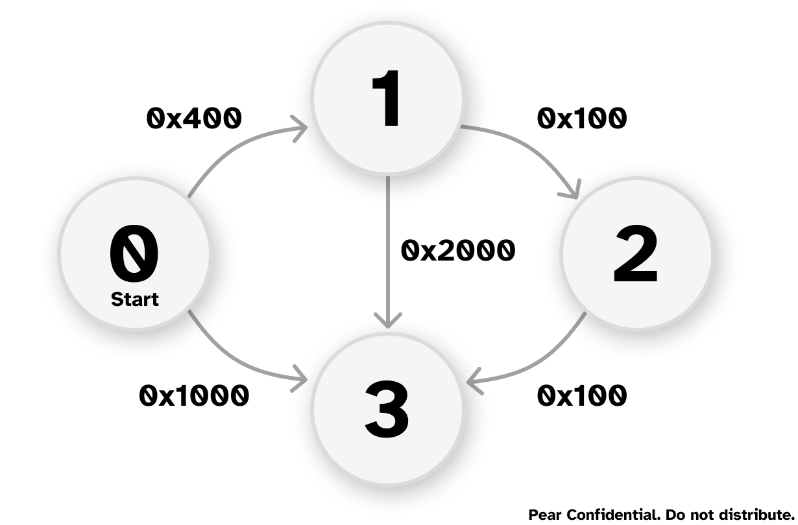
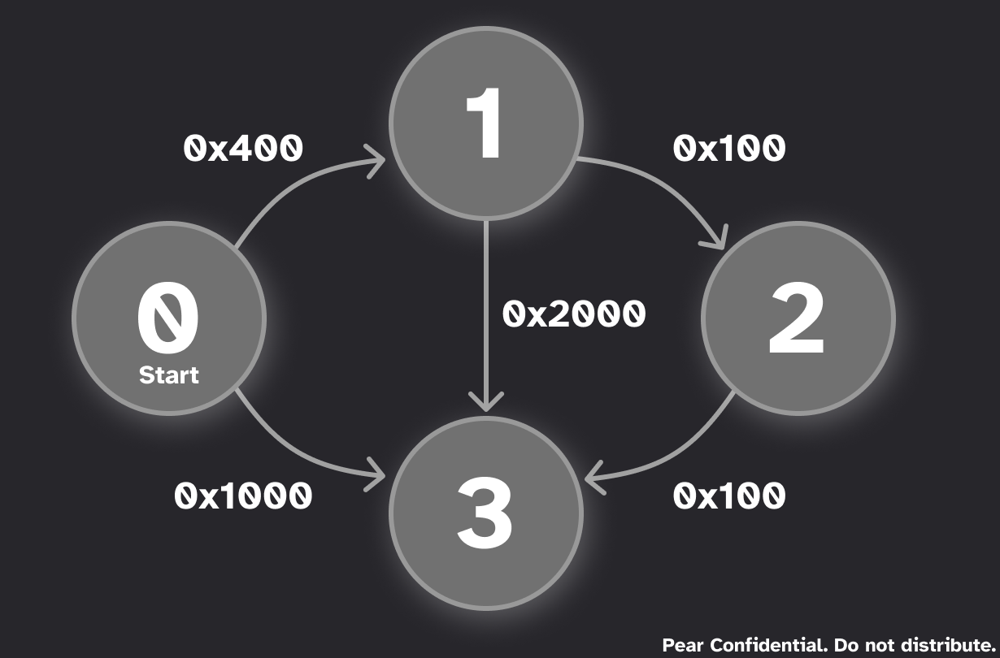
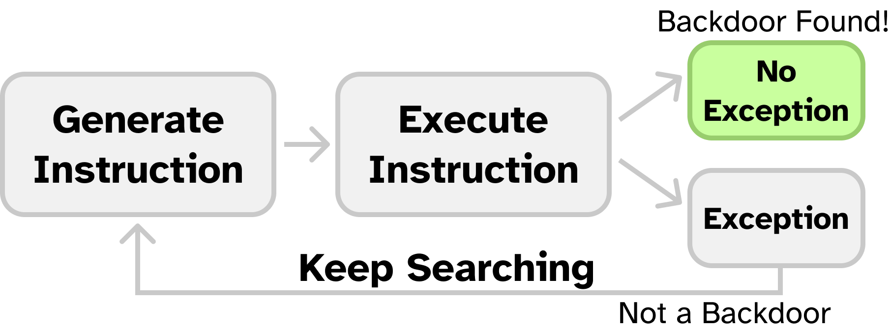
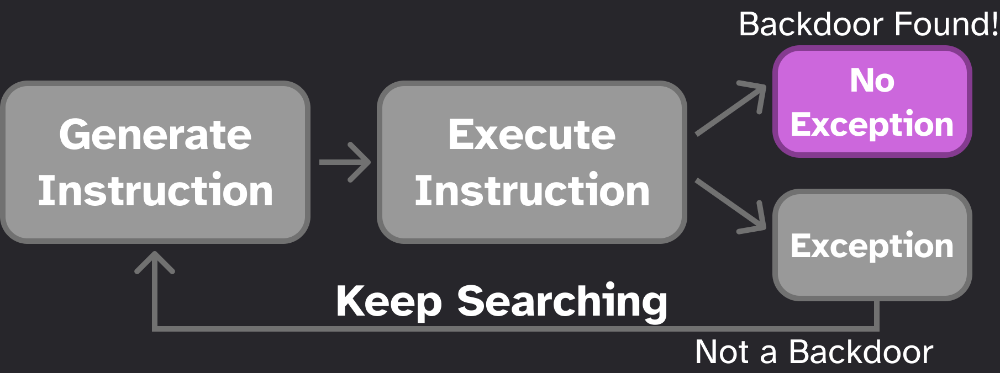
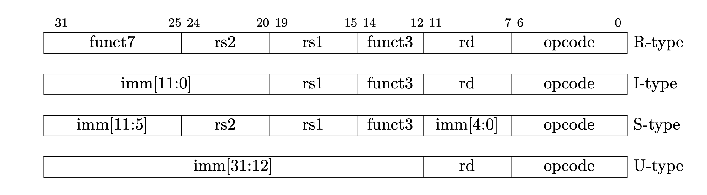
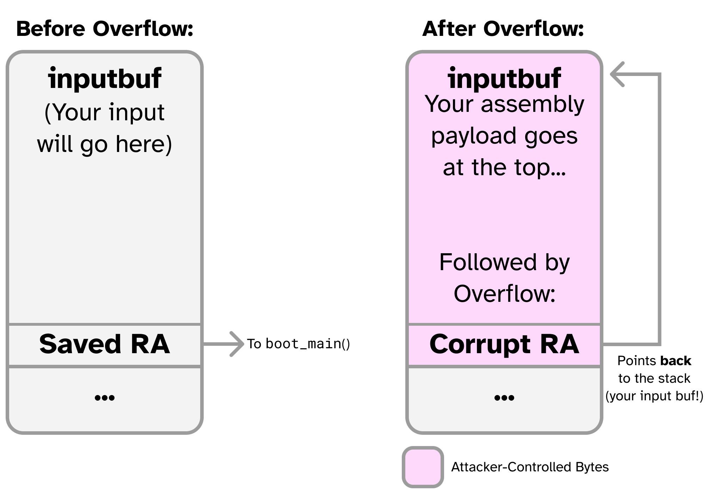
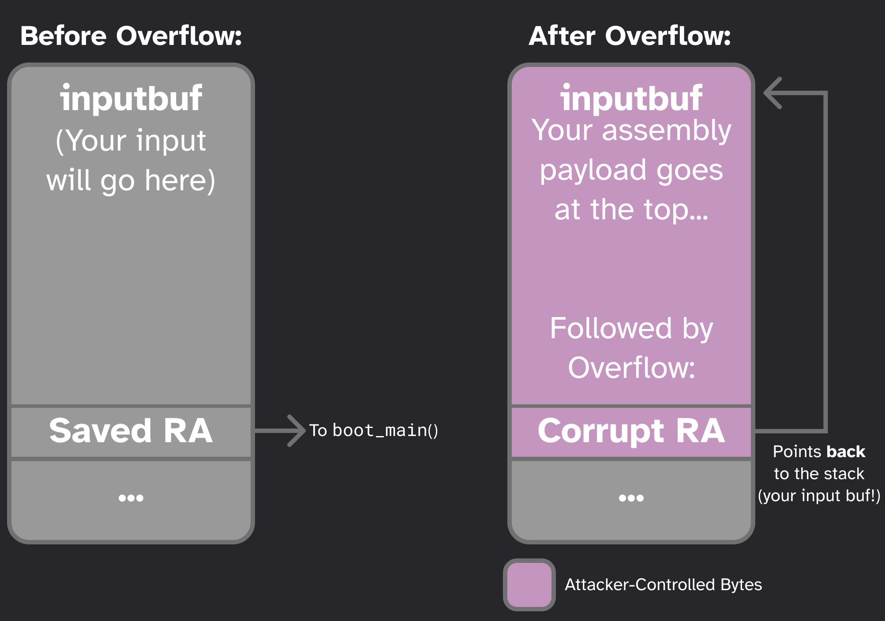

CPU Fuzzing Lab
Mid-checkpoint Date: Apr 29; Due Date: May 6; Last Updated Date: Jan 22
Table of Contents
- Overview: Pretty Secure Processor
- Part 1: Mystery of the Faulty CPU (10%)
- Part 2: Fuzzing for Faulty Inputs (30%)
- Part 4: Using the Backdoor to Exploit a Remote System (15%)
- Part 5: Bug Bounty (Optional, 10% Bonus)
- Part 6: Challenge Problem (Optional, No Credit)
Lab Details
Collaboration Policy
Our full Academic Honesty policy can be found on the Course Information page of our website. As a reminder, all 6.5950/6.5951 labs should be completed individually. You may discuss the lab at a high level with a classmate, but you may not work on code together or share any of your code.
Getting Started
Log in to our lab machine with ssh username@unicorn.csail.mit.edu. The username and initial password are the same as previous labs, though you should have changed your password on unicorn (when you use it as a jumper) in previous labs. We will not email you again about this information but feel free to ask TA if you forget it.
We are using git for all the labs – instructions for setting up the git repository can be found on the labs page.
In addition to submitting code, you are required to submit a PDF lab report containing your answers to Discussion Questions to Gradescope. We provide a markdown template in the starter code (report.md).
Mid-Checkpoint Date (Warning: Start Early!)
This lab is a potpourri of many systems level programming tasks, including writing low-level RISC-V assembly and C and automating tasks with Python. Since this lab involves many open-ended tasks, we strongly encourage you to start early and aim to complete Parts 1–3 by the mid-checkpoint date (Apr 29).
Overview: Pretty Secure Processor
In this lab we will explore utilizing CPU fuzzing techniques to discover RTL bugs in a pipelined RISC-V CPU. Specifically, we will be executing all of our attacks on a modified version of Pretty Secure Processor, a CPU designed by your CA Joseph. This modified CPU was custom built specifically for this lab.
This page contains a complete description of the PSP platform – we highly encourage you to refer to it. Specifically, the sections on CSRs and serial IO will be useful.
What am I building in this lab?
In this lab you will implement a number of low-level CPU tasks in C and RISC-V assembly to build a CPU fuzzing engine.
Your code will run on the simulated CPU bare metal. That is, you have complete control of the hardware, and your code runs inside the CPU being tested. Your job is to write code that tests the hardware and reliably reports whether the hardware (which may have CPU bugs) is operating correctly or not.
At the end of the lab, you will use the CPU bugs you have discovered and the knowledge of return-oriented programming from the ASLR lab to build an end-to-end exploit on a remote Pretty Secure Processor.
What happens when I run my code?
All of your lab code runs on Pretty Secure Processor, a 5-stage pipelined RISC-V CPU. When your code is built, we send it to a cycle-accurate simulated Pretty Secure Processor core and let it run.
By “simulated”, we mean that the RTL (the SystemVerilog that defines the CPU) itself is simulated in a cycle-accurate simulator. Your code is not running in an emulator (like Qemu) nor an ISA simulator – we are simulating everything down to the cycle level! That means that microarchitectural properties like pipelining, hazard forwarding, etc., are all in play for this lab.
 The entire CPU pipeline is simulated at a cycle accurate level: no emulation here!
The entire CPU pipeline is simulated at a cycle accurate level: no emulation here!
(Note that this diagram is for demonstrative purposes only and does not show the entire pipeline. You do not need to understand this diagram in detail, it is provided purely to illustrate the core from a bird’s eye view).
Running your code
From the top directory of the lab code, there are two scripts – run.sh and gdb.sh. To run a given part, first cd into the part and compile it with make. You will need to rebuild each part with make whenever you change any of the code.
Then, from the lab root directory, you can run a given part with ./run.sh partX.
Adding Code
Our Makefile will automatically build and link any extra files you create. You can create new C files with the .c extension and assembly source files with the .s extension. There is one restriction that you cannot create two files having the same name but one has .c and the other has .s extension, e.g., fuzz.c and fuzz.s.
Note that for symbols to be exported from an assembly file they need to be marked .global.
Debug Mode
To enable debug mode, edit debug.sh and fill in SHD_DEBUG_PORT with the debug port that was emailed to you.
Then, you can add --debug to the end of the run.sh invocation to start debug mode.
You should see something like the following:
$ cd part1 && make && cd ..
$ ./run.sh part1 --debug
Waiting for debugger on port XXXX...
You can now open a new terminal window and run gdb.sh.
You should see Debugger attached! printed in the original terminal, and GDB should give you a session like the following:
$ ./gdb.sh
...
Remote debugging using localhost:XXXX
start () at bringup.s:44
44 la x1, exception_handler_entry
(gdb)
Now you are in a GDB session running on PSP. You can set breakpoints, inspect registers, and step through the assembly to see how your code is behaving. In case you have forgotten the GDB commands, you can refer to the RISC-V System Programming Recitation cheat sheet (link will be available later).
Part 1: Mystery of the Faulty CPU (10%)
Congratulations! You landed your dream job as a CPU design engineer at the Pear Computer Company. Your manager has tasked you with using Pretty Secure Processor as the CPU for the next Pear Phone Pro.

The PearPhone Pro
You sent an early version of your phone out to the Maps test team so they could test the navigation algorithms. To your surprise, they reported that the new phone was producing different shortest paths than expected. The Maps team conducted a thorough review of their software, and found no possible errors – they have concluded it must be a hardware bug, and your manager agrees with them.
The Maps team provided the following example graph and expected output:
 
The expected output:
Distance of node 1=0x400
Path=1<-0
Distance of node 2=0x500
Path=2<-1<-0
Distance of node 3=0x600
Path=3<-2<-1<-0
The output from the faulty CPU:
Distance of node 1=0x400
Path=1<-0
Distance of node 2=0x500
Path=2<-1<-0
Distance of node 3=0x1000
Path=3<-0
The team is using Dijkstra’s Algorithm to find the shortest path between the nodes. They have tracked the bug to happening at this line in the code:
if(mindistance+cost[nextnode][i]<distance[i])
In this part, we will analyze the CPU to figure out what is going wrong.
Getting Familiar with the Codebase
Before we dig into the CPU internals, let’s get familiar with the lab infrastructure. In this part, you will be asked to navigate the codebase and answer several questions. No need to write any code.
1.1 Building and Running the Starter Code
- Checkout the lab codebase into your account on Unicorn.
cdinto thepart1directory and build it withmake- Run the code with
./run.sh part1from within the top level directory. You should see the incorrect output as shown above.
Now, open the part1 folder in your favorite code editor, and answer the following questions about the starter code in your report. These questions are intended to help guide you through the starter code – feel free to explore the code on your own too!
1-1 Discussion Question
- Open
bringup.sand read through thestartmethod. What is the name of the C method thatstartjumps to when it finishes by runningmret? Which CSR is used to hold that address?startspecifies an exception handler by writing toCSR_MTVEC. What is the name of the handler? What file is it implemented in?linker.lddefines the memory map of the binary built by the build system. What section is the stack located in? How large is the stack?- Open
asm_offsets.h. This file is automatically generated when you compile the project. What is the offset of themepcfield ofsaved_regs_t? Where issaved_regs_tdefined?- Which RISC-V register is used as the return address in the calling convention? Which register is used as the stack pointer? (Hint: Refer to Table 18.2 of the RISC-V Calling Convention)
- What privilege mode does the starter code run the CPU in, after
mretinbringup.s?
1.2 Debugging the CPU
Let’s inspect the code from the Maps team to learn why the CPU is not finding the correct shortest path. Open dijkstra.c and navigate to line 55.
1-2 Exercise
Let’s debug the CPU using the basic approach: using
printf. Insertprintfstatements intodijkstra.cbefore line 55 to print the values of the operations performed by theifstatement. Print all information relevant to the operation – that is, print the value ofmindistance,cost[nextnode][i], their sum as computed by the CPU, anddistance[i].Look at the CPU reported output of
mindistance+cost[nextnode][i]and see whether you can capture the bug. We will not grade the coding for this part, since they are just a fewprintf.
The
%doption inprintfis not supported in our code base. Please use%xinstead.
1-3 Discussion Question
Based on the printf result, record what are the inputs (eg. values of
mindistanceandcost[nextnode][i]) that cause the addition instruction to return an incorrect sum? Does the operation fail for all inputs or just specific ones?(Note: You do not need to exhaustively test the input space, just report the ones you observe from running the starter program).
Submission and Grading
Write the answers to the questions in your report. No code for this part.
Part 2: Fuzzing for Faulty Inputs (30%)
Impressed with your ability to understand incorrect CPU behavior, your boss has assigned you a new task – to write a program that can automatically test a given CPU to see if the addition bug is present, and if so, return what inputs cause the sum to fail.
In the industry, we call such a program a regression test used to ensure that known bugs do not accidentally get reintroduced to the RTL before tapeout (when the CPU design is sent to the factory).
We assume a bug is a set of inputs a and b that, when added together, produces an output that is not equal to a+b, just like we saw with the faulty results running Dijkstra’s algorithm above. We assume that the order of operands does not matter (that is, if a+b fails, then b+a fails too). We limit the search space of operands to [0x100,0x1FF] for both a and b (that is, only consider values of a and b from 256 to 511 inclusive).
Your task is to check the addition operator for all operands in the search space, and print out any operands that fail. Note that you cannot trust the CPU to perform the add instruction correctly (you can assume all other arithmetic instructions are bug-free). How do you know if the CPU made a mistake? Or alternatively, how do you implement the specification for the add instruction in your code? This is an open-ended problem with multiple possible solutions.
2-1 Discussion Question
What is your approach for finding the operands that can trigger the bug with the
addinstruction? Briefly describe it.
Starting from this point, you are free to modify any C or assembly file you’d like!
Additionally, you can add as many source files as you want – the build system will automatically build and link them for you!
2-2 Exercise
Navigate into the
part2folder and create two new files –fuzz.candfuzz.h.Create a method
void part2_fuzz_inputs()and modifyshd.cto call your new method fromshd_main. You also need to#include "fuzz.h"and define a function signature for your new method.Your method should analyze all possible sums for operands between 256 and 511 (inclusive). If it finds any inputs that fail to produce the correct sum, it should print the input pair and what the erroneous sum was.
When you want to call
printf(), include our own printf fromutils.h. The printf fromstdio.h, which you were using in previous labs, is implemented to run on standard Linux, not on our psp, which has no operating system.
For interacting with our grading scripts, you should use the following format specifier to print out failing operands: printf("0x%X+0x%X=0x%X,0x%X\n",a,b,a+b,expected) (where a and b are the buggy inputs, and expected is what they should have added up to). It is ok if the same inputs appear twice in swapped order (eg. if you print both a,b,a+b,expected and b,a,b+a,expected).
Your output should look like:
+------------------+
| MIT SHD Fuzz Lab |
| Part 2 |
+------------------+
0x10+0x10=0x30,0x20
0x15+0x15=0x16,0x2A
...
We will grade your lab on a CPU with random bugs!
Do not assume the bugs present on the lab handout CPU will be the same that your code is graded against – your code should exhaustively search the input space to find and report all bugs!
You should assume there can be zero or multiple addition bugs (inputs that cause the addition to fail) with randomly distributed operands.
2-3 Discussion Question (optional)
After completing part 2, please share with us: Did you encounter any bugs while implementing the fuzzer? How did you handle the possibility of
addinstructions being incorrect during control flow instructions (e.g., loop condition checks)?
Suggested Strategies / Hints
- You could test your code by running it on the host Linux machine and use that as a “Gold” CPU model. (You probably need to change to include header files that are supported by the host linux and write another main function specifically for the host linux.) On the Linux host your code should report no bugs, and on Pretty Secure Processor it should report some bugs.
- Note that you cannot trust the CPU hardware to perform addition correctly. What happens if your loop logic requires a sum that is computed incorrectly?
You can use Python or a shell script to automate generation of your test cases. If you do, please commit these scripts to your repository as well, and include instructions for how to use them in your report.
Submission and Grading
git add all the new files you created for Part 2, including any Python or shell scripts you wrote to automate generation of your code. Running ./run.sh part2 should create a printout of the bugs your fuzzer found. Your code should run for no longer than 10 minutes.
Part 3: Fuzzing for a Hidden CPU Backdoor (45%)
Bad news! This morning, a news report came out describing in the wild cases of PearPhone kernels being compromised by a new strain of malware. This malware is somehow capable of elevating the CPU privilege level from PSP_PRIV_USER to PSP_PRIV_MACHINE, bypassing all OS restrictions. While the CPU design team believes this is impossible, your boss has a suspicion – that someone inserted a malicious backdoor into the CPU itself!
Whenever the CPU attempts to execute an undefined instruction, it is supposed to throw an exception with mcause set to EXCEPTION_CAUSE_INVALID_INST (see defines.h:51). Your boss believes the CPU backdoor is a single instruction encoded in an undefined region of the RISC-V ISA instruction encoding space that, when executed, does not throw an exception, but instead sneakily switches the privilege mode of the pipeline. An attacker who knows the encoding of this hidden instruction can use this to bypass the PearPhone OS security mechanisms.
In this part, you will write a hidden instruction fuzzer to search automatically for backdoors in the CPU that elevate your privilege level to machine mode. We will start with searching for undocumented instructions, and then study their behavior.
The following provides an overview of the intended approach for finding undocumented instructions:
 
Whenever the CPU encounters an instruction it cannot execute, it will throw an invalid instruction exception. For every instruction in the search space, we attempt to execute it, and watch for an exception. If any of them don’t generate an exception, we know that the CPU “understands” it as a valid opcode, and therefore it is a good candidate for being a CPU backdoor.
3.1 Writing an Exception Handler
Before we can search for undefined instructions, we need to be able to handle exceptions. For actually undefined instructions, trying to run them will cause the exception handler to run. For any backdoors, the exception handler will not be called (as the backdoor is decoded as a valid instruction).
Here is a description of a possible exception handler for you to implement. It saves all registers (x1-x31 and mepc, which holds the pc value of the faulting instruction), handles the exception logic (possibly changing the values of some of the saved registers), and then loads the new CPU state before finally executing mret.
Recall that you have found the file that should implement the exception handler in part1. Our implementation in the starter code only includes the first half of the exception handling that 1) creates space on the stack for a new saved_regs_t, 2) stores the registers into it, and 3) passes the address of this struct to exception.c. You can use our test method named exception_test() (defined in exception_test.s) to test your exception handler. The test method generates an illegal instruction exception and checks whether your exception handler is saving and restoring the CPU state correctly. Start by modifying shd_main to call exception_test(). You should see something like the following, telling you the exception handler in the starter code is incomplete:
+------------------+
| MIT SHD Fuzz Lab |
| Part 3 |
+------------------+
Triggering exception...
=============================
Exception!
pc: 0x000005F0
x1: 0x11111111 x2: 0x00002FD0 x3: 0x33333333 x4: 0x44444444
x5: 0x55555555 x6: 0x66666666 x7: 0x77777777 x8: 0x88888888
x9: 0x99999999 x10: 0x10101010 x11: 0x11111111 x12: 0x12121212
x13: 0x13131313 x14: 0x14141414 x15: 0x15151515 x16: 0x16161616
x17: 0x17171717 x18: 0x18181818 x19: 0x19191919 x20: 0x20202020
x21: 0x21212121 x22: 0x22222222 x23: 0x23232323 x24: 0x24242424
x25: 0x25252525 x26: 0x26262626 x27: 0x27272727 x28: 0x28282828
x29: 0x29292929 x30: 0x30303030 x31: 0x31313131
TODO: You need to write the exception handler return code!
3-1 Exercise
Read through the starter code in
exception_entry.s. Your task is to implement the second half of the exception handler assembly inexception_entry.s, and fill inexception.cwith any logic your code needs.First, remove the code that causes the handler to print
TODO: You need to write the exception handler return code!and halt. Next, you should fill in theTODO’s inexception_entry.sto restore the saved state (the opposite of what the starter code does).Finally, fill in the TODO in
exception_handlerinexception.c(the C method called by the handler entry assembly) to properly handle the fault. If the exception cause was an illegal instruction, at minimum this means incrementing the savedmepcby one RISC-V instruction length to resume execution at the next assembly instruction after the undefined one. You will add more logic here in the later parts.If implemented correctly,
exception_test()should printPassed exception test!.
3-2 Discussion Question
Why does the exception handler restore
x2after all the other registers?
Here is how RISC-V exception returns are handled by the Linux kernel.
Note that the starter code is just a suggested approach – feel free to remove it and rewrite it however you want!
This part is considered complete if exception_test reports your exception handler passed.
In later parts, you are allowed to modify your exception handler in any way you want, including in ways that make
exception_testfail.
exception_testwill report a failure if any registerx1-x31is changed by the exception handler. For this lab, you may actually want to modify registers in thesaved_regs_t, which is acceptable!You will not lose points if
exception_testsays your code fails. It is just a guideline to help you implement Part 3.We recommend starting with an exception handler that passes
exception_testto ensure your assembly is correct, and adjusting it later in the lab as you want. For this reason, we also recommendgit commit‘ing your code at this current state, in case you later break your exception handler and want to restore it to the previously working version.
3.2 Searching for Undocumented Hidden Instructions
Now that we can catch illegal instruction exceptions, it’s time to scan for backdoors. Your boss wants you to only consider the custom-0 subspace of the instruction encoding space. custom-0 has an opcode of 0001011, or 0x0B (See Table 24.1 in Volume I of the RISC-V ISA Specification on page 129). The CPU does not officially support any custom-0 instructions, so if you find one that doesn’t throw an illegal instruction exception, it is a hidden instruction!
Your boss said that while the opcode is probably custom-0, the decode stage of the pipeline is likely stealthily rejecting all instructions with this opcode whose upper immediate bits do not match some secret. You should treat this backdoor instruction as a U type RISC-V instruction, where the upper immediate bits (bits 31 to 12) are a secret, and the opcode is custom-0.
Recall the RISC-V 32I instruction encodings (Volume I Figure 2.2 on Page 16):

In this part, you will loop over all custom-0 instructions with different possible upper immediate bits. That is, you should generate all instructions where the opcode field (bits 6:0) is set to custom-0, and the upper bits (31:12) are set to a guessed secret value. You will execute each instruction, and then check if a CPU illegal instruction exception occurred. If it did not, you should print out the full encoding that caused no exception.
You can calculate a single instruction encoding with the following:
OP_CUSTOM0 = 0x0B # See Table 24.1 in Volume I of the ISA Spec.
def encode_instruction(secret):
return OP_CUSTOM0 | (secret << 12)
For this lab, only consider the cases where the upper immediate bits (secret value) are between 0 and 65535 inclusive.
High-level Guideline
You will need to test all possible instruction encodings in this region. If an instruction is invalid, it will trigger the execution of the invalid opcode exception handler. After executing the handler, we will return to the test code. If it is a hidden instruction, the code will just run through without executing the handler. Your key task to identify a hidden instruction will be to distinguish between the case when an exception has happened and the case when an exception has not happened. At a high level, you will need to figure out a way for the invalid opcode exception handler to communicate information to the test code. This can be done via setting flags in memory or in specific registers or many other ways. You can pick the one you like to implement. It is ok if your design decision causes your exception handler to fail exception_test as long as you are able to discover the backdoor opcode.
Note that a key challenge in this part is that you will need to test many instructions. You will not want to write the code manually. Possible solutions include generating the test code automatically with Python, or making use of self-modifying code. If you write automation scripts, make sure to commit them to your repo, and include documentation of how they work in your report. (Only submitting a massive auto-generated assembly file is unacceptable).
For now, your test code runs with PSP_PRIV_MACHINE privileges (see bringup.s).
3-3 Discussion Question
Describe your design decisions for the exception handler. What does it do while trying to find the undocumented instruction? How does your exception handler communicate with the test code?
3-4 Exercise
Write a method that tries all
65536possiblecustom-0instructions, with the upper bits (bits 31 to 12) set to a value between[0,65535]inclusive. If it finds an instruction that does not throw an illegal instruction exception, it prints the opcode to serial withprintf. If no instruction is found, it prints that it could not find any hidden instructions.
3-5 Discussion Question
Include the hidden backdoor instruction found by your code/script in the report.
This is an open ended programming task!
You are allowed to modify any and all parts of the starter code. You can implement this method in assembly or in C. You can create as many extra files as you need to. You will likely need to modify the exception handler as well to support your code.
A Few Assembly Tips
Here are a few assembly tips that may come in handy. Note that you do not necessarily need to use any or all of them.
Shared variables between C and ASM
Recall that assembly symbols can be exported to C with the
.globalkeyword. So, to create a variable that is shared between C and assembly, I can write the following in assembly:.global shared_var shared_var: .word 0x1234And then in C refer to it with the
externkeyword:extern uint32_t shared_var;
Emitting Arbitrary Instructions
You can emit an arbitrary encoding for an instruction with the
.wordkeyword.For example, here is how to add the instruction encoded by
0x41414141to the program:some_asm_method: add sp, sp, -4 .word 0x41414141 add sp, sp, 4See
exception_test.s:111for an example!
Inline Assembly
You may find the inline assembly
gccfeatures to be useful.
Hints/ Warnings
- Recall that the CPU does have bugs with the
addinstruction, so be careful if your opcode enumeration code requires addition! - If your approach makes use of self modifying code, insert 5
nopinstructions after your write instruction to flush the CPU pipeline. (If you try to write to an instruction and then immediately run it, a stale opcode may be in the pipeline.) - Don’t forget to commit any extra files you add to your
gitrepo! - You can automate parts of your solution by writing Python code to produce assembly in bulk (eg.
print(f"la a0, {test_case}")will emit the assembly code to loada0with the Python variabletest_case). If you write Python code, commit the Python code to your repo. - If your assembly code is too long, you might see
relocation truncated to fit: R_RISCV_JALerror during the compilation. Here is what happens: JAL instruction can only jump to a range of [-1MB, 1MB]. If some function in your code is too long, this range might not be enough. To solve this, you could change your JAL instructions to JALR. - Your exception handler needs to communicate with your test code in some way to report when exceptions occur. How this works is up to you.
This part is considered complete if your code finds and prints the opcode of the hidden backdoor instruction.
3.3 Elevating Privileges to Kernel Mode
Congrats on finding a hidden instruction! Your boss, amazed at your skills, wants to see if you can figure out how to activate the backdoor. You may have noticed that even after running the backdoor, you still cannot access privileged CSRs from PSP_PRIV_USER (try it!). Attempting to load a privileged CSR when the core is booted in PSP_PRIV_USER should throw a EXCEPTION_CAUSE_ILLEGAL_ACCESS (mcause=0x00000001) exception, even if the backdoor instruction is run first.
So, why doesn’t the backdoor work?
It seems that the authors of the backdoor were even sneakier than we thought, and added another condition that must be satisfied before the backdoor instruction elevates your privileges.
Your boss took the CPU to a focused-ion beam (FIB), and found a wire connecting the decode stage to register x10 that wasn’t in the original design. Your boss suspects that x10 must be loaded with a secret value before the backdoor is called.
So far, your code has been running in
PSP_PRIV_MACHINE. Before continuing, updatebringup.sto start your code withPSP_PRIV_USERinstead. This way, we can check to see if we gained any extra privileges by running the backdoor instruction.Additionally, for Part 3.3, you can hard-code the opcode you discovered in Part 3.2.
3-6 Discussion Question
Describe your approach for finding the correct
x10value. Does the exception handler behave differently when searching for the correctx10value of that instruction compared to searching for hidden instructions?
3-7 Exercise
Write some code to try and load a privileged CSR (pick any CSR you want!) and run it without running the backdoor instruction. You should see that the load succeeds if
bringup.sstarts your code inPSP_PRIV_MACHINEmode, and throws an exception if it starts inPSP_PRIV_USER.Now, while running in
PSP_PRIV_USER, add a call to the backdoor instruction before the CSR read. You should still see an exception being thrown, even if you ran the backdoor instruction. This is because the backdoor is not called with the correct value forx10, and so it does not change the privilege level.Modify your code to set
x10to values between[0,65535]inclusive before calling the backdoor. For each value in[0,65535], setx10to the value, run the backdoor instruction discovered in Part 3.2, and then try to load a CSR. If the CSR load succeeds, print the value ofx10out. If it fails, try another value ofx10. You may need to modify your exception handler code to detect when CSR loads cause faults.When complete, your code should be able to start in
PSP_PRIV_USER, call the backdoor with differentx10values until the CPU privilege level changes, and then read the contents of a privileged CSR.
3-8 Discussion Question
Include the correct
x10value found by your code/script in the report.
When a CSR load fails, the CPU throws a different kind of exception-
EXCEPTION_CAUSE_ILLEGAL_ACCESS (0x00000001)(seedefines.h:48). You can use this to distinguish CSR load failures from illegal instruction exceptions.
3.4 Putting it All Together
Now we will combine your code to discover hidden instructions with your code to fuzz those instructions. Your combined code should, in one go, search the undocumented instructions to find the backdoor instruction, fuzz the backdoor instruction for the correct x10 value, and then print both the correct opcode and x10 value to standard out.
3-9 Exercise: Putting it All Together
Combine your code from Parts 3.2 and 3.3, printing both the discovered opcode and
x10value to standard out.
3-10 Discussion Question (optional)
After completing part 3, please share with us:
Did you encounter any challenges while building the code? How did you overcome the challenges of the
addinstruction occasionally producing an incorrect result? Did you try anything that failed?
When grading Part 3 we will run your code on a different CPU with a different backdoor opcode and
x10encoding, so do not assume anything about the value of these constants besides they are within the bounds specified in this document.You can assume that at most one backdoor instruction exists with exactly one correct
x10value corresponding to it.
Submission and Grading
git add all the new files you created for Part 3, including any Python or shell scripts you wrote to automate generation of your code. When we build and run the contents of your part3 directory, your code for Part 3.4 should immediately begin running, and report the correct opcode and x10 value discovered on the hardware (which again, will have different values when we grade than they are on your assigned CPU).
Your part 3 output should follow the following format (printf("backdoor=0x%X\n",backdoor) and printf("x10=0x%X\n",x10_val)):
+------------------+
| MIT SHD Fuzz Lab |
| Part 3 |
+------------------+
backdoor=0x????00B
x10=0x????
Part 4: Using the Backdoor to Exploit a Remote System (15%)
For this final part, you will combine all of the bugs you have discovered so far to exploit a remote secure server. There is a Pretty Secure Processor running on the network hosting a C application running in unprivileged mode (PSP_PRIV_USER). This application is correctly written and suffers from no buffer overflow bugs during normal execution. However, the CPU suffers from the add bug as you have seen in the earlier parts of this lab. It also has the backdoor present which can be used to elevate your privileges to PSP_PRIV_MACHINE once code execution has been obtained.
The source code for this secure server is found in the part4 directory. We will begin by testing our exploit on a local CPU where we can run with PSP_PRIV_MACHINE privileges and use gdb for testing. First, we will manipulate the CPU to cause a buffer overflow by feeding it inputs that cause the add instruction to malfunction, bypassing the bounds check. Next, we will write some RISC-V assembly to dump a hidden secret from the CPU by reading from some special CSRs – this assembly is the code we want to run on the remote processor. Finally, we will implement a return to shellcode attack, storing the assembly we wrote in the input buffer and tricking the CPU into jumping to it by overwriting the saved return address.
This will allow us to send code to the remote CPU to run and cause it to be executed, granting us full control of the remote CPU.
This part will introduce you to several commonly used CTF tools. You have also seen these tools in recitation. We will guide you through the process of using these tools to implement a software-hardware exploit on a remote server.
Getting Started
First, cd into part4, build it with make, and run it. You should see something like the following:
+------------------+
| MIT SHD Fuzz Lab |
| Part 4 |
+------------------+
inputbuf is at 0x2CD4
How long is your first name: 7
How long is your last name: 5
Ok, tell me your first name: Joseph
And your last name: Ravi
Your username is JosephRavi
Play around with the inputs and get a feel for how the application works. Note that the length inputs require you to add 1 byte for the newline character. That is, if your name is Joseph (6 chars), you would need to add a 7th character for the newline.
See if you can overflow the buffer by typing in a large name. You should be unable to cause a crash (if you did, let us know on Piazza!)
4.1 Redirecting Control Flow
Our primary objective of this part is to modify pc to point to an arbitrary address. We will accomplish this using a buffer overflow.
Open shd.c and take a look at the code. You should see the following bounds check:
if (fname_len + lname_len > sizeof(inputbuf)) {
printf("Error: Your name is too large!\n");
return;
}
This bounds check prevents the buffer from being overflown by normal inputs.
As we control both fname_len and lname_len, we can skip this bounds check by feeding in inputs that should fail the check, but instead pass (their sum is less than sizeof(inputbuf)) because of a bug in the add instruction. Revisit the bugs you found in Part 2 and pick a set of inputs that satisfy this condition and try them here. Can you bypass the name length check? (Try it in the terminal!)
Once you have found input lengths that bypass the bounds check, see if you can get the CPU to crash by feeding in a really long username. You should be able to achieve something like the following:
+------------------+
| MIT SHD Fuzz Lab |
| Part 4 |
+------------------+
inputbuf is at 0x2CD4
How long is your first name: {REDACTED}
How long is your last name: {REDACTED}
Ok, tell me your first name: AAAAAAAAAAAAAAAAAAAAAAAAAAA
AAAAAAAAAAAAAAAAAAAAAAAAAAAAAAAAAAAAAAAAAAAAAAAAAAAAAAAA
AAAAAAAAAAAAAAAAAAAAAAAAAAAAAAAAAAAAAAAAAAAAAAAAAAAAAAAA
AAAAAAAAAAAAAAAAAAAAAAAAAAAAAAAAAAAAAAAAAAAAAAAAAAAAAAAA
...
AAAAAAAAAAAAAAAAAAAAAAAAAAAAAAAAAAA
And your last name: Your username is AAAAAAAAAAAAAAAAAAA
AAAAAAAAAAAAAAAAAAAAAAAAAAAAAAAAAAAAAAAAAAAAAAAAAAAAAAAA
AAAAAAAAAAAAAAAAAAAAAAAAAAAAAAAAAAAAAAAAAAAAAAAAAAAAAAAA
...
AAAAAAAAAAAAAAAAAAAAAAAAAAAAAAAAAAAAAAAAAAAAAAAA
=============================
Exception!
pc: 0x41414141
x1: 0x41414141 x2: 0x00002FF0 x3: 0x00000000 x4: 0x00000000
x5: 0x00000000 x6: 0x00000000 x7: 0x00000000 x8: 0x41414141
x9: 0x00000000 x10: 0x0000000A x11: 0x00002CD4 x12: 0x00000000
x13: 0x00000000 x14: 0x0000000A x15: 0x00000000 x16: 0x00000000
x17: 0x00000000 x18: 0x00000000 x19: 0x00000000 x20: 0x00000000
x21: 0x00000000 x22: 0x00000000 x23: 0x00000000 x24: 0x00000000
x25: 0x00000000 x26: 0x00000000 x27: 0x00000000 x28: 0x00000000
x29: 0x00000000 x30: 0x00000000 x31: 0x00000000
TODO: You need to write the exception handler return code!
Notice how we crashed with pc=0x41414141. 0x41 is the ASCII encoding for the character A. This is great news! It means that our input somehow made its way into the pc register by overwriting the saved ra on the stack somewhere.
shd_main stores the return address on the stack, and restores it before exiting. Since we bypassed the buffer size check, our string was so large that it overwrote this value on the stack, meaning that when shd_main tried to return, it instead treated our input as an address and tried to jump to it.
You will see
0x41414141in a lot of security blog posts as a “proof-of-concept” that a bug is exploitable.
Now open solve_part4.py. This is a Python script that uses the pwntools library to automate interacting with the processor. This script will allow us to easily send non-printable characters (like assembly bytes) into the CPU. We have filled in a starter skeleton for you to use to build your exploits. Feel free to write your exploit however you want, the starter skeleton is simply a guide.
We will use this script to automate overflowing the buffer and precisely redirecting code flow to our controlled data on the stack.
Note that while our earlier proof-of-concept (filling the buffer with AAAAAAA...) proved that we can gain control of pc, it did not tell us which part of our input eventually made its way into pc. That’s because every byte of our input is identical! (That is, we don’t know if it was the first A, one of the A’s in the middle, or the last A that made it into pc since they are all the same).
pwntools provides the method cyclic that allows us to fix this issue in a really efficient way. cyclic returns what’s called a de Bruijn sequence. The output of this is a series of unique 4 byte chunks that do not repeat (for a very long time, anyways). Give it a try:
>>> cyclic(100)
b'aaaabaaacaaadaaaeaaafaaagaaahaaaiaaajaaakaaalaaamaaanaaaoaaapaaaqaaaraaasaaataaauaaavaaawaaaxaaayaaa'
Generate a long username with cyclic and use that as your username. You should see a new crash pc value. This pc value will be the ASCII encoding of some unique part of the de Bruijn sequence. Since each 4 byte chunk is different, we now know exactly where in the input sequence pc is being read from.
For example pc could be 0x6161616F. Using this feedback, pwntools quickly allows you to look up the offset in the input string that controls pc with cyclic_find.
>>> cyclic_find(0x6161616F)
56
In this example, the offset 56 bytes into my overflow was what controlled pc.
4-1 Exercise
Open
solve_part4.py.Fill in
FIRSTNAME_LENandLASTNAME_LENwith the inputs you found above. Fill in the argument tocyclic_findwith thepcvalue you found usingcyclic. This will fill inbufwith enoughA’s to stop right before what gets filled intopc.Now, the next 4 bytes input into
bufwill be put intopcwhenshd_mainreturns. These bytes must be packed as a 32 bit integer (little endian), which the p32 method will handle for you. Fill in some hex number into thep32call, send thebufto the processor as the first and last names, and run the script – you should see a crash withpcset to that hex number.Once you can reliably use
solve_part4.pyto changepcto an arbitrary address, you are done with Part 4.1!
4.2 Dumping the Flag
Now, we will write some assembly to read the flag from a sequence of CSRs. CSRs 0xFC0 to 0xFF0 contain a hidden secret flag that requires PSP_PRIV_MACHINE to read. The first ASCII char of the flag is stored in CSR 0xFC0, the next in 0xFC1, and so on.
4-2 Exercise
Create a new C or assembly file with a method that reads CSRs starting at
0xFC0and ending at0xFF0. If you are using assembly, don’t forget to mark your method as global with.global. For each CSR, write the value read to CSR0x202(the softserial output port) to display it in the terminal.To test your code, modify
bringup.sto boot the CPU withPSP_PRIV_MACHINE, modifyshd.cto call your method (add a call to it somewhere inshd_main), and run the processor. You should see an example flag printed out to the terminal.Once that is working, modify back
bringup.sto boot the CPU withPSP_PRIV_USER. Your flag dumper should no longer work. Add a call to the backdoor instruction you discovered in Part 3 to your flag dump routine, and try it again – the flag dumper should once again work.
4-3 Discussion Question
This part is complete once your flag dump routine can dump CSRs
0xFC0to0xFF0to the console, even whenbringup.sboots the CPU inPSP_PRIV_USERmode. You should see an example flag of the formMIT{...}printed. Include this flag in your report.
We recommend using assembly for this part. We also recommend automatically generating your assembly code with a Python script. Create a Python script called
gen_dump_flag.pyand fill it withMake sure to output a symbol and mark it as global so you can find it from C. (eg.
.global flag_dumpandflag_dump:before your instructions).
Refer to
serial_csr.sfor a refresher on how to read/ write CSRs! (Specifically, the serial port).You may also find referring to the psp documentation page useful.
4.3 Writing the Exploit
We will now combine the primitives from parts 4.1 and 4.2 to exploit the remote CPU. To recap, in Part 4.1 we discovered how to modify control flow (e.g., change the pc register) by causing a buffer overflow when the CPU miscomputes a bounds check with the buggy add instruction. In Part 4.2 we wrote some assembly code (called “shellcode”) that is able to elevate its own privileges using the CPU backdoor and dump the contents of some privileged CSRs to the console.
In Part 4.3, we will use the ability to control pc to cause the CPU to jump to our own input buffer (where the username field goes). We will fill that input buffer with the code from Part 4.2 and send it to the CPU over serial. Then, we will use the buffer overflow to trick the CPU into jumping to the buffer, running the shellcode and granting us machine privileges.
The following figure provides an overview of this attack:
 
There is a remote Pretty Secure Processor attached to the network running this same program in PSP_PRIV_USER mode. You can attach to it by hand with the following command:
nc localhost 31337
Give it a try! You should see the same app you are already familiar with. The difference is that nc connects to a remote CPU that you do not have access to, so you cannot change the code or dump the CSRs without writing an exploit. We are going to fill out the rest of solve_part4.py to automate sending the shellcode you wrote in 4.2 to the CPU. We will use this script to send this payload over the network to exploit the remote CPU and reveal a privileged flag.
4-4 Exercise
Uncomment lines 24 and 25 in
solve_part4.py. These lines read in a binary file calleddump_flag.binand write it into a variable calledshellcode.dump_flag.binshould contain the binary values (the assembled bytes) of the code you wrote in 4.2.You can use the following to convert the object file (
.o) into a binary dump (.bin) to be used in the exploit. Assuming your assembly file containing the flag dump routine is calleddump_flag.s:make # Assemble the assembly file into a .o object riscv64-unknown-elf-objcopy -O binary dump_flag.o dump_flag.bin # Dump the .o into a .binNow, in Python, you can use the following to read your assembly code in as a bytestring:
shellcode_f=open('part4/dump_flag.bin', 'rb') shellcode=shellcode_f.read()We want to set
buf(the Python bytestring we send to the CPU) to begin withshellcode, followed by padding to make it the correct length, followed byp32(&inputbuf). This way, the CPU will attempt to execute starting at the first byte ofinputbuf, which contains ourshellcodevariable (the flag dumper).The starter code handles most of this for you:
buf = shellcode buf += b'A' * (cyclic_find(0) - len(buf)) # cyclic_find() should have been filled in in 4.1 buf += p32(0) # Replace 0 with the location of inputbuf as displayed by the programNow, run
solve_part4.pyand you should see the flag printed to the console.Finally, at the top of the program, comment out
io=process(['./run.sh', 'part4'])and uncomment:# Uncomment this to try on the remote CPU: # io=remote('127.0.0.1', 31337)Try
solve_part4.pyagain and it should dump the flag of the remote CPU! This flag should be different to the one you see when running on the local CPU. Once you have leaked the flag from the remote CPU, you are done with this lab.
4-5 Discussion Question
Include the flag leaked from the remote CPU in your report.
Do not worry about cleaning up after your exploit – if the CPU crashes after dumping the flag, that is fine, as long as there is not an unreasonable amount of extra text generated after.
To clean your exploit up, you can add a
j .instruction at the end of your flag dumper which will trigger an infinite loop, preventing any crashes or extra text generation.
Submission and Grading
git add all the new files you created for Part 4, including any Python or shell scripts you wrote to automate generation of your code. In your report, include the flag you leaked from the remote CPU. Also include in your report where to find the flag dumper method in your part4 directory.
Your solve_part4.py code should attempt to connect to the remote CPU and dump the flag to the console when run.
Part 5: Bug Bounty (Optional, 10% Bonus)
Did you find something wrong with the lab? Were you able to break the CPU in an unintentional way? (Eg. cause a deadlock, found a bug or race condition in other instructions, etc.). Did you find a way to crash our GDB server or a bug in the simulator?
Find a bug in the lab materials, let us know about it, and you may be rewarded with bonus points!
There is no intended solution for this part – we do not know of any bugs in our lab code.
However, we encourage you to try and find some!
Non-exhaustive list of possible bugs:
- Deadlock condition that causes the CPU to stop executing instructions.
- Memory corruption vulnerability in our GDB server implementation.
- Incorrect pipeline hazard forwarding for system control instructions (eg.
ecall,csrrw,mret, and the backdoor). - Incorrect handling of privilege level for instructions at different privilege levels simultaneously in the pipeline.
- Simulator errors or incorrect reading of system state (single stepping causes multiple instructions to be executed instead of one, register state read by GDB is incorrect at a given instruction, memory contents as seen by GDB are incorrect or delayed by a few cycles).
- Vestigial features (such as secure calls/ pointer HMACs, features the core used to support but we disabled – see the GitHub page) were incorrectly disabled and cause bugs.
- System Management Core exploits (the IPI generator/ IPI ring) – what happens if userspace code triggers a self-IPI?
We are most interested in unintentional breaks of the RISC-V specification or issues where the core fails to comply with our stated documentation. An example of a non-issue is how some of our CSRs do not comply with the specification – we intentionally break the ISA in some limited documented situations.
Note that what issues qualify for the bonus is at the sole discretion of the instructor.
Part 6: Challenge Problem (Optional, No Credit)
Was this lab too easy for you? Here’s an optional for-fun challenge problem to further test your exploitation skills.
There’s another Pretty Secure Processor running on the network, except this time it has a different set of CPU bugs. You’ll need to port your fuzzer into your exploit payload. But how do you even get an exploit payload to run in the first place…?
nc localhost 31338.
6-1 Exercise (Optional)
Fill in your exploit in
solve_part6.py.
Acknowledgements
Made by Joseph Ravichandran and Mengjia Yan.